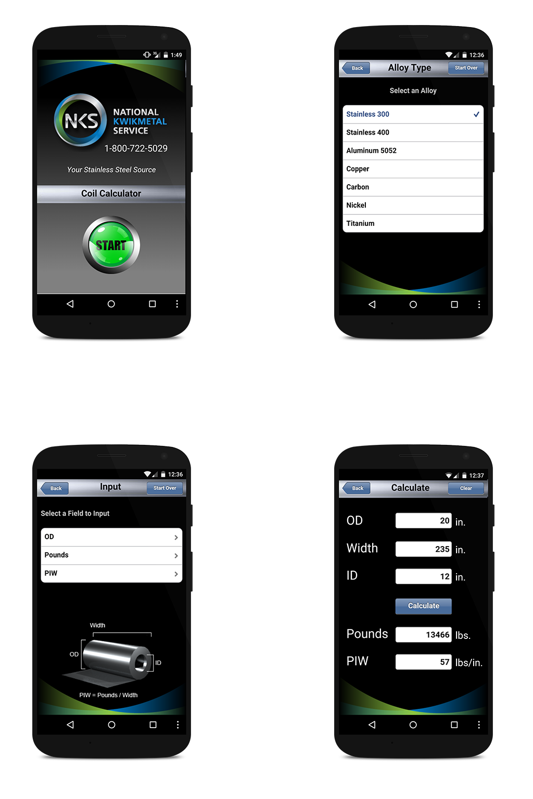

National Kwik Metal
The Coil Calculator application was created in order to bring an analog tool for calculating metal alloy dimensions into the digital age. The application would serve as an easier and faster alternative to the analog wheel calculator. This was an individual project where I did the UX, UI, and Front-End development. I created the mobile application with the software MobiOne and published the app to the Apple and Play store.
The company I created this application for worked in the stainless steel industry. Their primary focus is selling and distributing stainless steel coils. They wanted me to create a mobile application to replace the analog calculator wheel that they currently used at work. They also wanted me to make the application able to calculate different metal alloys, in addition to stainless steel, so that other companies could use this app too.
Because I was unfamiliar with the Stainless Steel industry I first had to research who was using the calculators and what information was needed in order to perform the calculation. Along with SME interviews, I also took a tour of the factory to learn more about the environment and the workers.
After learning about the industry and the users, I had a better idea of what I was going to design. I discovered that users had three different ways they could calculate the coil dimensions based on what information they had. It was imporatnt that I designed and programmed the app to easily fit to all three situations.
Knowing what I had to design for, I created an easy step by step process for making the calcuations. Each step was a screen that had a short description of what the user needed to do. I broke the app down in steps because of all the different scenarios it could be used for, depending on alloy and calcuation information.
Because the application was being used to calcuate specific coil dimensions, I had to program customs functions on the buttons of the app using JavaScript. Each metal alloy had its own density that would be given a specific id when selected to be used later for the calcuations.
After finishing the custom JavaScript functions to do the needed calculations, I finished the prototype and tested it with users in the metal coil industry. Some helpful feedback I received was to have an example of what the dimensions needed of the coil looked like. To fix this, I created a quick 3D model of a coil in 3D studio Max and imported an image of that in the application and pointed out the different dimensions.
After several rounds of user testing and iterations, I created the application and published it to the Apple and Play store. Overall, the client was happy with the product and the users found it much easier to use than the traditional analog wheel calculator.
